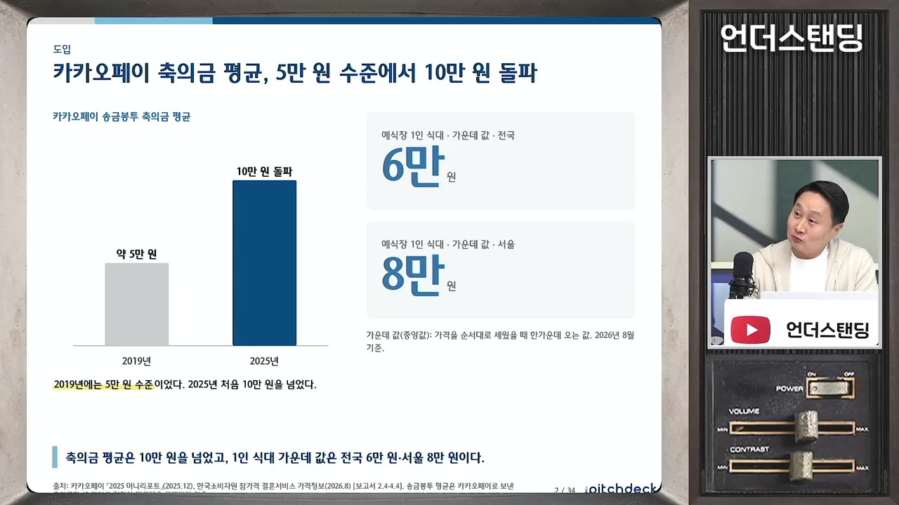
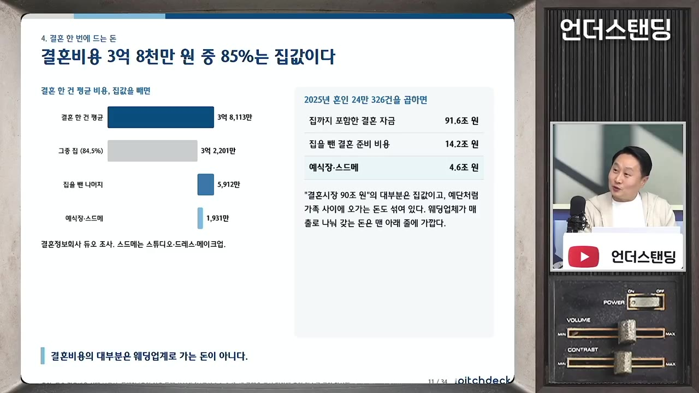
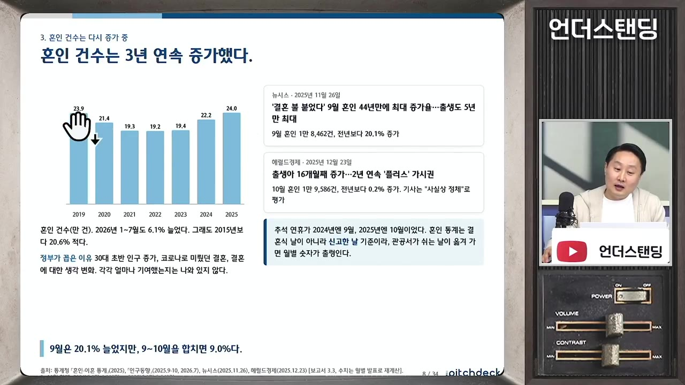
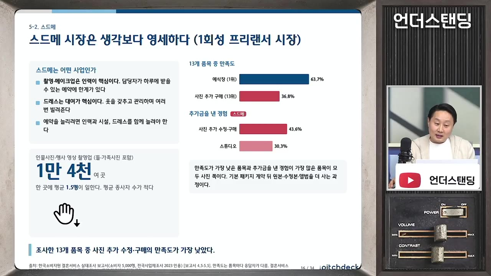
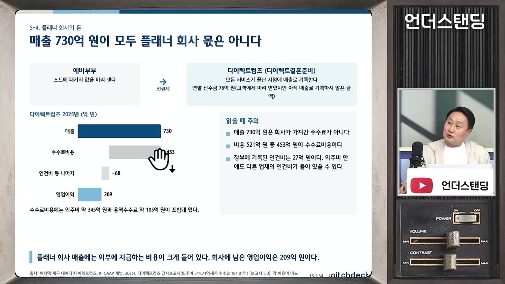
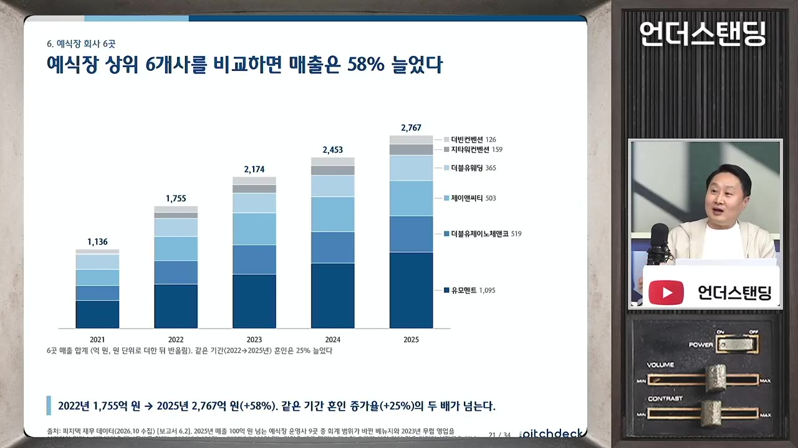
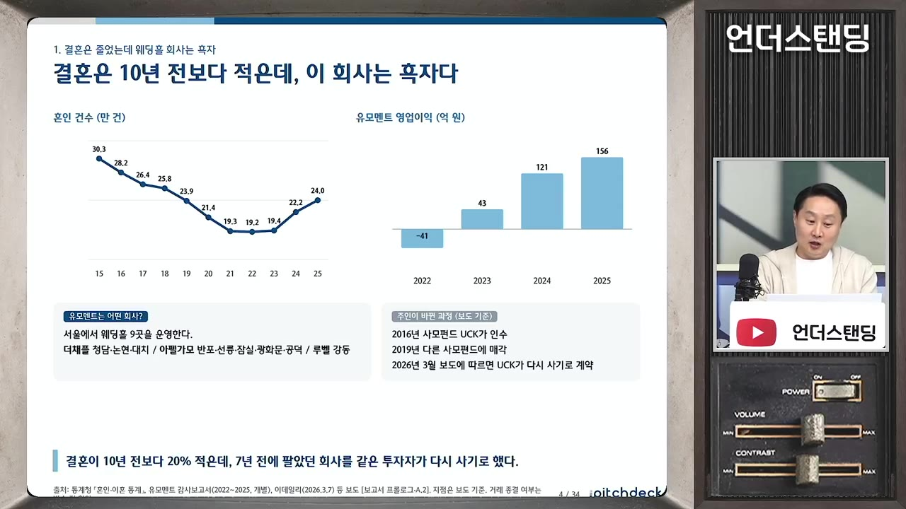
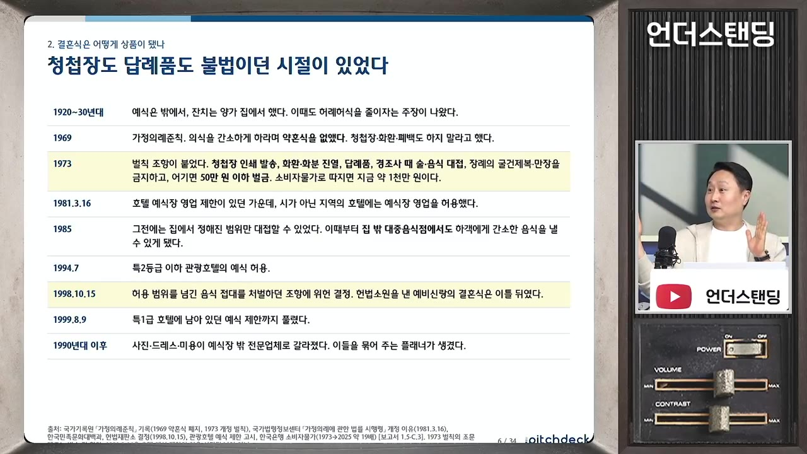

축의금 10만원 시대에 예식장 밥값은 8만원. 결혼 안 해도 예식장은 이렇게 돈 번다 (피치덱 이동열 대표)
▶ 원본 영상 보기한눈에 보기
- 결혼 적령 인구는 90년대보다 약 30% 줄었고 앞으로 30% 더 줄지만, 웨딩홀·결혼정보회사·웨딩플래너 1위 기업은 영업이익률 15~18% 안팎으로 돈을 잘 벌고 있다는 것이 출연자의 분석이다.
- 결혼식 비용(집값 제외)의 약 60%가 식대라서, 웨딩홀의 본질은 "적당한 음식을 좋은 동선으로 빠르게 회전시키는" 음식점 사업이다.
- 축의금은 2025년 기본 10만 원을 넘었고, 하객 1인 식대는 전국 약 6만 원, 서울 약 8만 원(중앙값)이다. 평생 한 번뿐인 행사라 가격 저항이 낮아 가격(P)을 올려 줄어드는 건수(Q)를 메우고 있다.
- 스튜디오·드레스·메이크업(스드메)은 평균 1.5명이 일하는 영세 업종이라 돈을 못 벌고 불만도 가장 많다.
- 웨딩 시장은 중고차처럼 성숙 산업이 됐고, 사모펀드(PE)가 기존 웨딩홀을 인수해 체인으로 묶는 미국형 재편이 유력하다고 본다.
이런 분께 도움이 됩니다
- 결혼 준비 중이라 비용이 왜 이렇게 비싼지, 돈이 어디로 가는지 궁금한 분
- 웨딩·상조·사모펀드 등 '성숙 산업'의 수익 구조를 투자 관점에서 이해하고 싶은 분
핵심 내용
결론: 결혼은 줄어도 웨딩홀은 버틴다
- 시장 규모는 가격(P) × 건수(Q)다. 결혼 적령 인구(Q)는 90년대~2000년대 초보다 약 30% 줄었고, 앞으로 거기서 30%가 더 줄어드는 구조다. (1:39)
- 그래도 출연자(피치덱 이동열 대표)는 "결혼정보업체와 웨딩홀 시장은 끝까지 갈 수 있다"고 본다. 스드메는 프리랜서 시장이라 논외다. (35:08)
- 일본도 Q가 줄자 P를 올려 버티는 중이고, 한국도 그렇게 될 수 있다는 진단이다.
💡 건수는 줄어도 가격을 올릴 수 있는 시장이라 1위 업체의 이익은 '따박따박' 나온다.
결혼식 비용, 숫자로 보기
- 축의금은 2025년 10만 원을 넘었다. 2000년대 초반에는 5만 원이 기본, 10만 원이면 많이 내는 편이었다. (2:52)
- 예식장 하객 1인 식대는 전국 약 6만 원, 서울 약 8만 원(중앙값)이다. 그래서 호텔 결혼식에 10만 원을 내면 "욕먹는" 수준이 됐다. (3:48)

- 결혼 비용 평균 3억 8천만 원 중 약 3억 2천만 원이 집값이고, 나머지 결혼식 관련 비용은 5~6천만 원 수준이다.

- 시장 규모: 집을 포함하면 약 90조 원, 집을 빼면 4~5조 원이다.
- 듀오 기준 4.6조 원, 소비자원 기준 5.3조 원(커플당 평균 비용 × 혼인 건수). (11:44)
- 평균 하객 수는 코로나 이전 339명에서 올해 260명으로 줄었다. 스몰 웨딩 흐름이다.
혼인 건수 증가는 '회복'일 뿐
- 혼인 건수가 3년 연속 늘었지만 코로나로 급감했던 수치가 전년 대비로 회복된 것이다. 장기 평균선을 그으면 큰 변화가 없다. (8:50)
- 코로나 기간에는 결혼해도 혼인신고를 미루는 경우가 많아 수치가 더 낮게 잡혔다.

웨딩홀의 본질은 음식점
- 집값을 뺀 결혼 비용의 약 60%가 식대이고, 웨딩홀에 내는 돈만 보면 식대가 70%를 넘는다.
- 사업자 등록도 웨딩홀·한식·컨벤션 등 제각각이지만 공통점은 직접 운영하는 음식점이라는 것이다. (12:45)
- 웨딩홀 측 설명: "합리적인 음식을 가장 좋은 동선에서 가장 높은 회전율로 파는 것이 메인 사업." (13:12)
- 인테리어를 잘 하고, 동선을 짧게 해 하객이 빨리 먹고 나가게 하며, 음식은 나쁘지 않게.
- 대관료는 거의 공짜에 가깝고, 1인당 식대 × 최소 보증 인원(개런티) + 꽃 장식으로 돈을 번다.
- 일반 음식점과 달리 평생 한 번 가는 곳이라 단골 개념이 없고, 그래서 가격이 높게 형성된다. (14:39)
- 영업이익률 15%는 음식점 기준으로 아주 높은 편은 아니다. 다만 주말에만 붐비고 평일은 놀며 한여름·한겨울도 비수기인데 이 이익률을 낸다면 가격이 그만큼 비싸다는 뜻이다.
💡 결혼식은 결국 '밥과의 싸움' — 어디서 하느냐가 비용을 결정한다.
스드메는 영세하고 불만이 많다
- 스드메 = 스튜디오(사진)·드레스·메이크업.
- 인물사진·행사영상 업체는 약 14,000곳, 평균 종사자 수 1.5명으로 사실상 1인 사업이다. (15:06)

- 웨딩홀·드레스·메이크업·스튜디오 중 불만 접수가 가장 많은 곳이 사진이다.
- 원타임 거래라 서로 단골이 아니고, 날짜가 정해져 있어 며칠 앞두고 바꿀 수도 없어 마음에 안 들어도 끝까지 가야 한다.
- 드레스는 대여가 주 사업이다. 한 벌을 사서 몇 번 빌려주느냐로 돈을 버는 구조라 리퍼 시장과 비슷하다.
- 묶음 구매 할인이 거의 없는 유일한 시장이다. AS도 없어 결혼 뒤 추가 매출(애프터마켓)도 없다.
- 큰돈을 연달아 계약하다 보니 소비자의 가격 감각이 무뎌져 '덤터기'가 많다.
플래너는 '플랫폼'처럼 돈을 번다
- 플래너를 쓰는 이유: 혼자 준비하기 어려워서 50%, 시간이 없어서 27%로 거의 80%다.
- 결혼 준비 1위 회사(다이렉트컴즈)는 매출 약 730억 원 중 약 450억 원이 스드메 업체에 나가는 수수료인데도 이익이 약 200억 원 난다. (18:29)

- 고객 돈을 먼저 받아 업체들에 나눠 주는 구조라, 업체를 고르는 힘이 있는 플래너가 '갑'이다.
- 정할 게 시계·가구·가전·주얼리까지 너무 많아 큰 것만 정하고 나머지는 플래너에게 맡기기 때문에 커졌다.
카테고리별 1위 기업
| 분야 | 1위 기업 | 영상 속 숫자 |
|---|---|---|
| 예식장 | 유모멘트(더채플·아펠가모·루벨) | 매출 1,090억 원, 이익 156억 원, 이익률 15% |
| 결혼 준비(플래너) | 다이렉트컴즈 | 매출 약 730억 원, 이익률 18% |
| 드레스·예복 | (자막상 불분명) | 약 40~42억 원 — 매우 영세 |
| 청첩장 | 바른컴퍼니 | 최대 업체 중 하나 (숫자 자막상 불분명) |
| 결혼정보 | 듀오 | 매출 480억 원, 이익 116억 원 |
- 웨딩 산업에서 돈 버는 곳은 남녀를 소개하는 곳, 결혼을 준비해 주는 곳, 예식장 세 곳뿐이라는 것이 출연자의 정리다. (19:54)
- 1위가 이 정도 규모라는 것 자체가 시장이 크지 않다는 뜻이다. 유모멘트의 점유율은 약 4조 시장의 2~3%다.
- 예식장 상위 6개 기업 매출은 최근 5년간 늘어 2,700억 원이 됐지만(시작 금액 자막상 불분명) 절대 규모는 작다. (20:53)

유모멘트 사례: 코로나 뒤 회복
- UCK(사모펀드)가 인수했다가 2019년 약 1,300억 원(자막상 '1300억인가')에 매각했다. 최근 다시 거래 계약이 진행 중이라고 언급한다. 거래 주체·금액은 자막상 불분명하다. (4:19)
- 펀드 만기(5~6년)에 맞춰 엑시트(투자금 회수)한 것으로 보인다는 설명이다.
- 코로나 여파로 2022년까지 고전했고, 2023년부터 이익이 늘어 적자에서 흑자로 돌아선 뒤 흑자 폭을 키웠다.
- 결혼 준비 앱도 내놨지만 실적은 신통치 않다. 업계 강자도 옆 카테고리로 확장하기가 어렵다.

지금 같은 결혼식은 고작 20~30년 된 문화
🔁 한국 결혼식 문화의 변화
- 집안 행사
- 가정의례준칙
- 헌법소원
- 호텔 결혼 허용
- 원스톱 예식장
- 1집안 행사
1930년대 일제강점기에는 집 마당에서 혼례를 치렀다. 그때도 '검소한 결혼' 요구가 계속 나왔다.
- 2가정의례준칙
1969년 약혼식·청첩장·하객 음식 대접 등을 금지하고 어기면 벌금(당시 50만 원, 지금 가치로 최대 1천만 원)을 물렸다. 호텔 결혼식도 막혔다. (6:07)
- 3헌법소원
한 신랑이 "왜 하객에게 음식을 못 주게 하느냐"며 헌법소원을 냈고, 본인 결혼식 이틀 전 위헌 판결을 받았다(1998년). (7:14)
- 4호텔 결혼 허용
특1급 호텔 결혼식이 1999년에 풀렸다. 호텔·전문 웨딩홀·컨벤션 세 형태가 자리 잡았다.

1969년 가정의례준칙부터 1999.8.9 특1급 호텔 예식 허용까지 연표 · ▶ 7:06 - 5원스톱 예식장
예식·식사(뷔페·스테이크)·폐백을 한곳에서 해결하는 지금의 형태가 됐다.
- 도시화로 마당 있는 집이 사라지면서 큰아버지·고모가 맡던 일을 외주로 주기 시작했고, 그것이 스드메·웨딩홀 산업으로 굳었다.
💡 30년밖에 안 된 문화라 정책·트렌드에 따라 얼마든지 바뀔 수 있다.
왜 가격을 올려도 손님이 줄지 않나
- 마우스는 1만 원에서 1만 5천 원으로 오르면 다른 걸 사지만, 결혼식은 평생 한 번이라 하고 싶은 곳에서 한다. (24:05)
- 수십 년간 낸 축의금을 '회수'하려는 마음 때문에 검소하게 하기 어렵다.
- 한국 결혼은 개인이 아니라 집안과 집안의 만남이라 어른들 눈치를 봐서 합리적 소비가 어렵다.
- 요즘은 오히려 무리해서라도 호텔에서 하려는 경향이 강하다는 업계 의견도 있다.
- 출연자 정리: '뻥튀기'라기보다 이 업종은 가격 민감도가 낮고, 그것을 활용해 가격을 올리며 버티고 있다. (39:52)
성숙 산업이 되면 PE가 들어온다
- 중고차처럼 더 크게 성장할 게 없는 성숙 산업은 매출과 비용이 명확해 계산이 서서 PE와 대기업이 좋아한다. (22:19)
- 여러 업체를 사서 밸류체인을 쥐고 3~5% 수준 이익을 꾸준히 가져가는 방식이다.
- 웨딩에도 UCK 같은 PE와 상조회사가 들어오고 있다. 상조회사의 목표는 '결혼부터 죽음까지' 전 과정을 맡는 것이다.
- 비용을 못 줄인 곳은 역성장하거나 적자로 돌아섰다. 매출 100억 원 이하 웨딩홀과 적자 기업도 많다.
- 모바일 청첩장 업체는 축의금 송금·화환 판매로 돈을 버는데, 작은 결혼식이 늘면 더 줄어들 수 있다.
앞으로의 재편 방향: 일본형 vs 미국형
| 일본형 | 미국형 | |
|---|---|---|
| 방법 | 단가를 올리고, 빈 시간대를 다른 행사에 대관 | 지역 웨딩홀을 인수해 체인으로 키움 |
| 한국 적용 | 어렵다 — 한국의 행사는 호텔·컨벤션이 가져감 | 유력 — 유모멘트 등 1위 업체가 이미 이 방향 |
- 웨딩홀을 새로 짓는 비용이 5년 전보다 두 배 넘게 올랐다. 웨딩홀은 위치와 주차가 가장 중요한데, 서울에서 둘 다 잡기가 매우 어렵다. (29:05)
- 코로나 전 100억 원 들던 홀이 지금 200억 원이면, 기존 홀을 150억 원에 사는 편이 낫다.
- 장사가 안 된 웨딩홀이 모델하우스로 바뀐 사례도 언급된다.
- 결과적으로 예식장 수는 줄고 상위 몇 곳이 점유율을 높인다. 시장은 정체돼도 1위 회사들의 이익은 꾸준히 나는 구조가 될 가능성이 높다는 전망이다. (32:52)
트렌드 변수: 스몰 웨딩
- 카페·야외 정원 결혼식은 오히려 더 비싸다.
- 가족끼리 식사로 끝내는 부부도 있지만, 두 사람 생각이 일치해야 가능하다. 투자자 의견을 모아 보면 당분간 주류는 지금 형태가 유지된다는 쪽이다. (33:49)
- 비용 팁(영상 속 경험담): 금요일 저녁 예식은 주말보다 약 30% 싸다. 다만 퇴근길 교통 체증 때문에 하객 불만이 나올 수 있다.
- 진행자의 가설: 결혼 비용과 절차가 워낙 무거워 "어떻게 한 결혼인데" 하며 이혼의 진입 장벽을 높이는 역할도 한다.
기억할 숫자·인용
- 축의금: 2025년 10만 원 돌파 (2000년대 초 기본 5만 원)
- 하객 1인 식대: 전국 약 6만 원 / 서울 약 8만 원(중앙값)
- 평균 하객 수: 339명(코로나 전) → 260명(올해)
- 결혼 비용 평균 3억 8천만 원 (집값 약 3억 2천만 원 포함)
- 시장 규모: 집 포함 약 90조 원 / 집 제외 4~5조 원 (듀오 4.6조, 소비자원 5.3조)
- 식대 비중: 전체 결혼 비용의 약 60%, 웨딩홀 비용의 70% 이상
- 유모멘트: 매출 1,090억 원, 이익 156억 원(15%) / 듀오: 매출 480억 원, 이익 116억 원
- 스드메 관련 업체 약 14,000곳, 평균 종사자 1.5명
- 웨딩홀 신축 비용: 5년 전 대비 2배 이상 (100억 → 200억 원 예시)
- 금요일 저녁 예식: 주말보다 약 30% 저렴
- "웨딩홀은 합리적인 음식을 가장 좋은 동선에서 가장 높은 회전율로 파는 것이 메인 사업이다." — 웨딩홀 업계 관계자(출연자 전언)
생각해볼 점
- 숫자의 일관성 확인 필요(내 의견): 다이렉트컴즈는 "매출 730억 원, 이익 200억 원"과 "이익률 18%"가 함께 나온다. 이익의 기준(영업이익·순이익)이나 연도가 다를 수 있다. 호텔 결혼식 허용 연도도 1998년(헌법소원)과 1999년(특1급 허용)이 섞여 나오므로 투자 판단에 쓰려면 원자료를 확인해야 한다.
- 출연자의 전망일 뿐(영상 주장): "웨딩홀·결혼정보업체는 끝까지 간다"는 1위 업체 기준의 전망이다. 영상에서도 적자·역성장 웨딩홀이 많다고 했으니 업계 전체가 안전하다는 뜻은 아니다.
- 문화 변화 리스크(내 의견): 출연자 스스로 "30년밖에 안 된 문화라 얼마든지 바뀔 수 있다"고 했다. 가격을 계속 올리는 전략이 스몰 웨딩·가족 결혼식 확산을 앞당길 수도 있다.
바로 해볼 일
- 결혼 준비 중이라면 견적을 '대관료'가 아니라 '1인 식대 × 보증 인원'으로 다시 계산해 보기
- 금요일 저녁·비수기 예식의 할인 폭(영상 속 경험담 약 30%)을 원하는 웨딩홀 2~3곳에 직접 문의해 보기
- 웨딩·상조 업종에 관심 있다면 유모멘트·듀오 등 언급된 기업의 공시 실적으로 영상 속 숫자를 확인해 보기